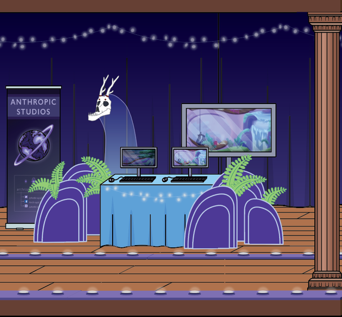
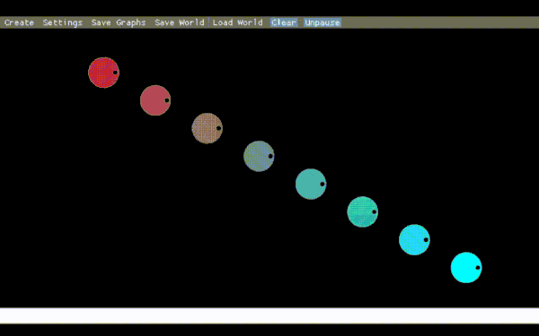
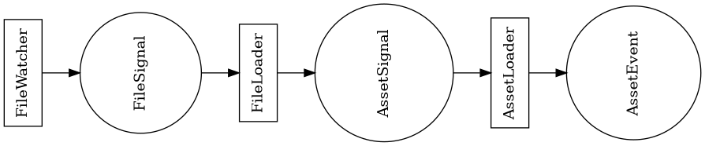
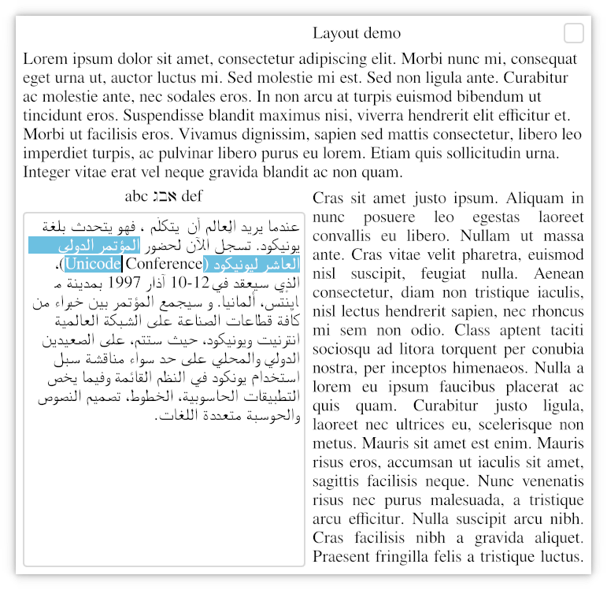
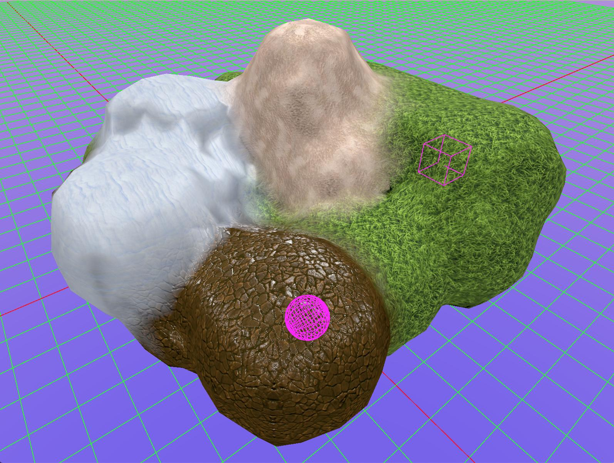
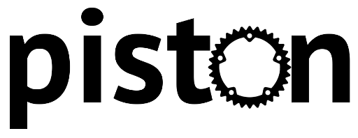
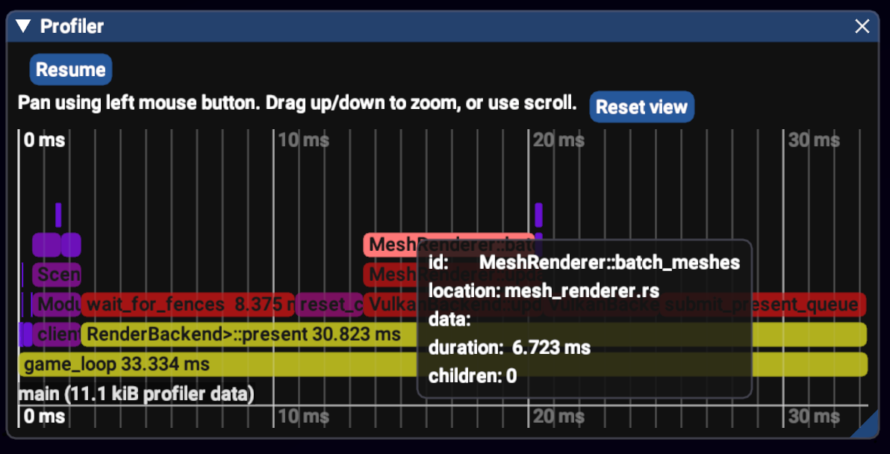
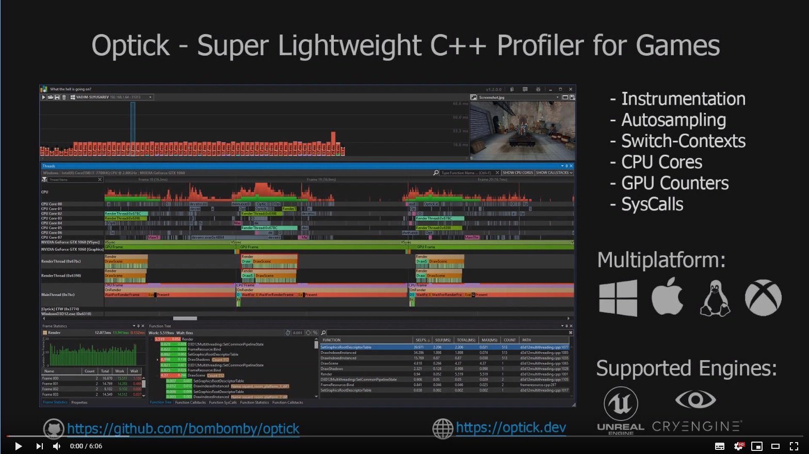

This Month in Rust GameDev #13 - August 2020
Welcome to the 13th issue of the Rust GameDev Workgroup’s monthly newsletter. Rust is a systems language pursuing the trifecta: safety, concurrency, and speed. These goals are well-aligned with game development. We hope to build an inviting ecosystem for anyone wishing to use Rust in their development process! Want to get involved? Join the Rust GameDev working group!
You can follow the newsletter creation process by watching the coordination issues. Want something mentioned in the next newsletter? Send us a pull request. Feel free to send PRs about your own projects!
Table of contents:
- Rust GameDev Podcast
- Game Updates
- Learning Material Updates
- Library & Tooling Updates
- Popular Workgroup Issues in Github
- Meeting Minutes
- Requests for Contribution
Rust GameDev Podcast

This month Richard @patchfx Patching started Rust GameDev Podcast!
Over the lockdown period I have been working on a new podcast for Rust game developers. I have been interviewing indie teams and library creators, discussing custom engines, procedural generation, open source and the business of games development.
-
The first episode is an interview with the team behind Veloren, an open-source multiplayer voxel RPG written in Rust.
Find out about the game's origin, its engine development, pros and cons of a big open-source project, CI and build pipeline, importance of artists, procedural generation, community building, managing players' expectations, and upcoming developments.
-
The second episode is an interview with Herbert Wolverson, creator of bracket-lib (pka RLTK), Rust Roguelike Tutorial, and Nox Futura.
A very wide-ranging interview covering many interesting topics: where the bracket-lib came from and what the creator is doing now, as well as practical questions and issues discovered in the course of creating their game, [Nox Futura]. Lots of interesting talk about a new Rust games development book Herbert is writing, C++ vs Rust, learning Rust, code architecture and ECS's in roguelikes, emergent behavior, and hilarious bugs in Dwarf Fortress.
The show has been distributed on most major platforms for you to listen and subscribe: Rust Game Dev Podcast (simplecast), Apple Podcasts, Spotify, RSS Feed, Google Podcasts.
Game Updates
Crate Before Attack
 Debugging camera motion: highlighted areas are points of interest
Debugging camera motion: highlighted areas are points of interest
Crate Before Attack by koalefant (@CrateAttack) is a skill-based multiplayer game where frogs combat their friends while navigating the landscape with their sticky tongues.
A playable browser build can be tried online.
Recent changes are:
- Training mode improvements, including a new map Dungeon by Kesha Astafyev.
- Better camera motion: multiple points of interest are tracked dynamically.
- Improved GPU performance by merging multiple render passes into one.
- Added control hints.
- Numerous bugfixes and tweaks.
More details are in August DevLog-entry.
Veloren
Landscape with new LoD and lighting
Veloren is an open world, open-source voxel RPG inspired by Dwarf Fortress and Cube World.
In August, Veloren 0.7 was released! Airshipper, Veloren's launcher, also got updated to 0.4.0. Veloren was featured in the inaugural episode of the Rust Game Dev Podcast. Although the 0.7 release party saw the largest number of concurrent players at 57, it ran into some significant issues which you can read about below.
The largest merge in Veloren so far also happened in August. It included monumental changes to lighting and added level of detail functionality to see far-off mountains. Lots of work has been done on the animation, combat, SFX, and UX front. Animations for movement and combat were added and improved. Work continued on particle systems, which have been added to Veloren in places like campfires, fireworks, and weapons.
Healing sceptre with the new particle system
You can read more about some specific topics from August:
- Airshipper 0.4.0 Progress
- Animation and Movement Updates
- Particle Timing
- 0.7 Release: Party Statistics and Kick Disaster
- Lighting and World Changes
- 0.8 Intro Meeting
- Audio SFX
- Photo Gallery
August's full weekly devlogs: "This Week In Veloren...": #79, #80, #81, #82, #83.
In September, work on 0.8 will continue. Some large systems being worked on include networking, improved persistence stability, and player experience. Game design is working on improving the connection between the experience a new player has, and the current game design. The in-progress 0.8 version will likely be completed more quickly than 0.7, as to not include too many changes.
A/B Street
A/B Street is a traffic simulation game exploring how small changes to roads affect cyclists, transit users, pedestrians, and drivers. Any city with OpenStreetMap coverage can be used!
Some of this month's updates:
- Multiple traffic signals can be edited together.
- An API and tools were added, to control maps and simulation from any language.
- Michael Kirk, a new team member, fixed HiDPI scaling issues in a consistent way.
- Many new cities imported, with better support for countries that drive on the left and support for using alternate languages from OpenStreetMap for roads and buildings.
- Backwards compatibility for a player's edits to the map.
- Two-way cycletracks and roads with multiple direction changes.
Egregoria
Egregoria's objective is to become a granular society simulation, filled with fully autonomous agents interacting with their world in real time. Egregoria was previously known as Scale, but was renamed to fit the theme better.
The 5th devlog was published, talking about the renaming, project management, buildings and scripting.
A Discord server was launched to discuss the project.
Discussions: /r/rust_gamedev
Cary

In Cary the player has to bring the titular character to the exit by carrying them or otherwise making sure they don't – nor the player themselves – touch any of the traps. Easier said than done when you have limited stamina and Cary keeps running into spikes.
Made with hecs and wgpu (no framework), but uses WebGL on the web because of the current implementation status of WebGPU.
Made during the Extra Credits game jam, it's a rather small game. It can be played in the browser or downloaded at itch.io.
Way of Rhea
 Anthropic's virtual booth at Play NYC
Way of Rhea is a puzzle platformer that takes place in a world where you can only interact with items that match your current color.
Way of Rhea has a free Steam demo temporarily available as part of Play NYC! The new demo includes a level that wasn't part of the Steam Game Festival, showing off how circuit puzzles will work in the game. Since Play NYC couldn't be in person this year, the devs temporarily themed this level to look like last year's Play NYC venue, included placing virtual booths for other games throughout the level.
Follow @AnthropicSt or @masonremaley on Twitter or sign up for the mailing list for updates.
vange-rs
vange-rs is the project of re-implementing the Vangers game (from 1998) in Rust using modern development practices, parallel computations, and GPU.
This month vange-rs got real-time shadows! See video on /r/rust_gamedev and technical description on the Hybrid Shadows post of the blog.
Another exciting development - the new bruteforce rendering technique allowing to shift the camera behind the mechos as in 3rd person view. See video on /r/rust_gamedev and technical description on the Bar Painting post of the blog.
Garden
Garden is an upcoming game centered around growing realistic plants. Some of the updates from the July & August devlog:
- A new player inventory system;
- Better collision detection and camera movement;
- Minimalist, scrollable text-based GUI for choosing which species to plant or the type of material to build with (or destroy) something;
- Plant growth now depends directly on the amount of light every individual leaf receives, calculated on the GPU;
- Variable leaf alignment and ease of creating variety;
- Better bark, detailed trunks, and new species;
- Completely new lighting using GI.
Chillscapes
Chillscapes is a lo-fi rhythm experience created for the NEOC#03 Rhythm Game Jam. Using layerable lo-fi music tracks, the game has you tap with the rhythm of the loops being added, before changing the music up by adding another loop into the mix. Last week, a retrospective update was published reflecting on what the developer's takeaways were from the experience.
Chillscapes is written using an early-in-development 2d engine, Kludgine. For audio playback, rodio was utilized. The source code is available on GitHub.
Dwarf Seeks Fortune
Collect all keys to unlock the door to the next level
Dwarf Seeks Fortune is a puzzle-platformer made with the Amethyst game engine. Its developer, Jazarro, has partnered with the Amethyst organization to make it an official Amethyst showcase game. It aims to be a learning resource for anyone looking to get started with Amethyst.
The game currently sports a growing feature set, two playable levels and an early version of an integrated level editor. It is ready for your contributions, so if you're interested, check out the contributor's guide or the good first issues. If you have any questions, open an issue on GitHub or approach Jazarro on the Amethyst discord.
Akigi
Akigi is a WIP online multiplayer game.
This month was mostly dedicated to the custom engine's scenery placement tool (video demo). Some of the updates:
- Terrain code refactoring and other required groundwork.
- Mouse-terrain intersection.
- Switching between Play and Place modes.
- Custom UI system.
Full devlogs: #078, #079, #080, #081, #082.
SIMple Physics
 One of SIMple Mechanic's Lua presets, a colorful wave of bouncing circles
SIMple Physics by @mkhan45 is a set of educational physics simulators meant to help students and teachers conduct labs without expensive equipment or in person classes. Each simulator uses serializable graphs, object inspection, Lua scripting, and a few other features to help students learn. Currently, there is a simulator for mechanics/projectile motion and one for universal gravitation, but the goal is to include one for electronics/magnetism and one for waves/optics.
Written in Rust using ggez, specs, imgui-rs, and nphysics,
this project's goals include:
performance, accessibility/portability, ease of use, and extensibility.
To find out more about the project, visit the site here, watch some cool gifs here, or read the GitHub page here.
Discussions: /r/rust
Learning Material Updates
Writing NES Emulator in Rust
"Writing NES Emulator in Rust" is a tutorial by @bugzmanov on creating a fully capable NES/Famicom emulator from scratch in the online book format. It walks through major steps of emulating NES platform components to run all-time classics, like Pacman, Donkey Kong, and Super Mario Bros.
It's a fun way of getting into hardware internals and fundamentals of computer systems. The tutorial also covers game-dev basics and how to work with graphics in Rust using SDL2 library.
Beginning Game Development with Amethyst
Click to watch the talk
Getting started with Rust + gamedev can be intimidating. At RustConf 2020, Micah Tigley gave a talk about their experience beginning game development using the Amethyst game engine and learning about ECS by implementing examples that aim to be accessible for beginners.
Supporting blog posts for the talk:
The source code for the demo can be found here.
Chargrid Roguelike Tutorial 2020

Chargrid by @stevebob is a collection of crates for building applications with text UIs that run in terminals, graphical windows, and web pages. It was made specifically with roguelike development in mind, though is general-purpose enough to be used for other applications.
Chargrid Roguelike Tutorial 2020 is a tutorial series about making a traditional roguelike from scratch using chargrid for rendering and input handling. Reference code is available in this git repo organized with one branch for each subsection.
Event Chaining as a Decoupling Method in ECS

@jojolepro released a blog post that provides an in-depth look at how using events in entity-component-system architectures can improve system reusability dramatically.
Using events in this way also allows for:
- easier testing,
- additional configurability,
- possible performance improvements,
- higher reusability - especially if using generics.
The blog also has an RSS feed and more in-depth posts about game development are planned.
Library & Tooling Updates
ecs_bench_suite
The full benchmark report is available here
This month @TomGillen (author of the Legion ECS) released ecs_bench_suite - a suite of benchmarks designed to test and compare Rust ECS library performance across a variety of challenging circumstances. Later, the project was adopted by the Rust GameDev WG so that all Rust ECS developers can converge on a neutral, community-maintained benchmark.
Discussions: /r/rust
Rapier: 2D and 3D Physics Engines Focused on Performance

Rapier is a new set of 2D and 3D physics engines written 100% in Rust. It is 5 to 10 times faster than nphysics, close to the performances of the CPU version of PhysX, and often slightly faster than Box2D.
For its first release Rapier includes:
- rigid-body dynamics;
- colliders and sensors;
- joint constraints;
- optional serialization of the physics state;
- optional cross-platform determinism on IEEE-754 compliant targets;
- optional explicit SIMD and parallelism;
- JavaScript bindings with official NPM packages.
This new physics engine is developed by the recently created Dimforge single-member Open-Source company replacing the former Rustsim organization created on GitHub by @sebcrozet.
Discussions: /r/rust
NeoCogi's Libraries
Jude3D is a web based 3D sculpting application. It's a WebAssembly application, written in C/C++ and compiled using Emscripten but after much thinking, the authors decided to move the development to Rust!
Many problems arise when moving existing C/C++/WebAssembly code to Rust. The two most important ones:
- The new code should still interop with the already existing code.
- Payload size matters on the web: your WASM app should be as small as possible.
These led the authors to drop using Rust's std in favor to their own libs (!#[no_std]),
at least until the std library crates are split up accordingly and stabilized,
for example, the alloc crate.
The good news is that they are releasing most of the libraries as they make them as open source! Also, a WASM glfw3/GLES2 example that showcases the libs is included (live demo).
cute-c2
cute-c2 is a 2D collision detection library that has had its first release to crates.io. The library is a Rust wrapper around the c2.h library.
The library can detect collisions between circles, rectangles, capsules and up to eight-sided convex polygons. There are also functions for manifold generation, the GJK algorithm, and ray casting operations. There is an example program in the repository.
hexasphere v1.0
The hexasphere library provides a customizable interface for subdividing 3D triangle meshes. Custom and stateful interpolation functions can be implemented as well as per-vertex attributes.
All that's required to define a base shape are the initial vertices, triangles based on the indices of the vertices in the initial vertices, and numbered edges. As long as the winding of the triangles remains consistent throughout the base mesh, all of the resulting triangles will retain that winding.
This library also provides a few interesting base shapes (which can be used alone if the shape is not subdivided): Icosahedron, Tetrahedron, Cube, Square Plane, Triangle Plane (all of which are pictured above).
blitz-path
blitz-path is a new crate providing an implementation of the JPS pathfinding algorithm.
JPS is an optimization of the A* search algorithm for uniform-cost grids, which are common in games. While fully functional, the code is still in an early state and any suggestions for improvements - especially on how best to integrate it with the existing ecosystem - are greatly appreciated.
This Month in Mun

Mun is a scripting language for gamedev focused on quick iteration times that is written in Rust.
August updates include:
- compiler support for type aliases;
- shared diagnostics between compiler and language server;
- support for the official inkwell crate;
- refactors and quality of life improvements.
inline_tweak
inline_tweak by @Uriopass is a library that allows you to tweak at runtime any number literal directly from your code. It works by parsing the file when a change occurs (inspired by this blogpost from Tuxedo labs). Usage example:
use inline_tweak::tweak;
loop {
// Try changing the value while the application is running
println!("{}", tweak!(3.14));
}
A watch!() macro that sleeps until the file is modified is also provided.
The library is minimal, only requiring the lazy_static dependency
to hold modified values.
In release mode, the tweaking code is disabled and compiled away.
yacurses
yacurses by @Lokathor is a cross-platform curses bindings crate that's
small, simple, easy to understand, and most importantly safe to use.
It wraps over ncurses on Unix and a bundled pdcurses on Windows.
If you're looking to make a terminal-based roguelike
(or any other terminal-based game), give it a try.
SPIR-Q v0.4.6
SPIR-Q is a light-weight shader reflection library, which allows you to query the types, offsets, sizes and even names in your shaders procedurally.
This month v0.4.2..v0.4.6 versions were released. Some of the updates:
- Specialization constants enumeration.
- Dynamically sized multi-binding support.
- Improved entrypoint debug printing.
- Better manifest merging method for pipeline construction.
- Bugfixes and various small API improvements.
Discussions: /r/rust_gamedev
Inline SPIR-V
Inline SPIR-V is a single-crate build-time shader compilation library based on
shaderc which provides procedural macros to help you translate shader sources,
in either GLSL or HLSL, inline or from-file, into SPIR-Vs and embed the SPIR-Vs
right inside your code as u32 slices. Despite basic shader compilation,
inline-spirv also support #include directives, macro substitution,
post-compile optimization, as well as descriptor auto-binding.
Discussions: /r/rust_gamedev
rspirv-reflect v0.1

Traverse Research has created the rspirv-reflect library to replace
their very basic use-case of the existing spirv-reflect-rs / spirv-reflect
libraries that are already out there. The current iteration of rspirv-reflect
is pretty minimal, but it allows you to extract the binding setup from a SPIR-V
binary. rspirv-reflect supports the latest version of SPIR-V (version 1.5 as
of writing) and it also supports all the new shader stages (both ray tracing
and mesh/task shaders) as well as the existing ones.
Traverse Research wanted to reduce their reliance on C and C++ unsafe
libraries and at the same time they needed to support newer features that were
slow to become available in the existing spirv-reflect library. The primary
use-case for this library is in conjunction with the Rust wrapper around the
DirectX Shader Compiler (dxc), called hassle-rs that Traverse Research
also built.
gfx-rs and wgpu
wgpu-rs's water example
gfx-rs project and wgpu ecosystem have observed the release of 0.6 versions! 🎉
Some of the updates:
- Reworked project structure:
wgpu-core- a safe pure-Rust internal API, implementing WebGPU specification;wgpu-rs- the idiomatic Rust wrapper;wgpu-native- the C API wrapper, aiming to be compatible with Dawn;- Gecko and Servo - for implementing WebGPU API in the browsers.
- Ability to record API traces, replay them on a different machine, and run data-driven tests.
write_bufferandwrite_texturefor update the GPU data without intermediate staging buffers or encoders.- A number of powerful native-only extensions, such as descriptor indexing, as well as web-compatible extensions like depth-clamping.
- naga v0.2 - an experimental shader translation library.
- The showcase gallery was updated.
Read about the details on gfx-rs blog.
@sothr has reworked the wgpu instancing tutorial. See discussion at /r/rust_gamedev.
KAS v0.5 and KAS-text v0.1

KAS by @dhardy is a general purpose UI toolkit; its initial aim is "old school" desktop apps with a good keyboard and touchscreen support. Unlike many modern immediate-mode UIs, KAS's widgets retain state, allowing minimal per-frame updates. KAS supports embedded WebGPU graphics now, and will (eventually) support being embedded within other contexts (requiring only a supply of input events and implementation of some basic graphics routines).
KAS v0.5 switches to a new crate for text layout,
KAS-text. KAS-text is a text layout
engine supporting multi-line editing, shaping and bidirectional text; future
versions will also support formatting. KAS-text is not tied to any particular
raster or render system; its positioned-glyph output is relatively easy to
adapt to crates like wgpu_glyph and gfx_glyph.
For more, see the article "Why I created KAS-text".
Egui
Egui is a highly portable immediate mode GUI library in pure Rust. Egui can be integrated anywhere you can paint textured triangles. You can compile Egui to WASM and render it on a web page using egui_web or compile and run natively using egui_glium.
Check out the Egui web demo.
Example:
Window::new("Debug").show(ui.ctx(), |ui| {
ui.label(format!("Hello, world {}", 123));
if ui.button("Save").clicked {
my_save_function();
}
ui.text_edit(&mut my_string);
ui.add(Slider::f32(&mut value, 0.0..=1.0).text("float"));
});
Discussions: /r/rust
voxel-mapper

voxel-mapper is a library and in-game editor for voxel maps, smooth or cubey. The ultimate goal of the project is to make it easy for artists and programmers alike to generate volumetric game content, either manually or procedurally. The library's author @bonsairobo has also written a couple posts:
- "Smooth Voxel Mapping: a Technical Deep Dive on Real-time Surface Nets and Texturing"
- "A 3rd Person Camera in a Complex Voxel World"
Upcoming on the roadmap are procedural generation algorithms for generating maps, new kinds of voxels, and graphical improvements. Currently, the library and editor depend on the Amethyst engine version 0.15, but there is a desire to make the library engine-agnostic. Contributions are welcome!
Bevy Engine

Bevy by @cart is a brand new, refreshingly simple data-driven game engine built in Rust. It aims to be:
- Capable: Offer a complete 2D and 3D feature set.
- Simple: Easy for newbies to pick up, but infinitely flexible for power users.
- Data Focused: Data-oriented architecture using the Entity Component System paradigm.
- Modular: Use only what you need. Replace what you don't like.
- Fast: App logic should run quickly, and when possible, in parallel.
- Productive: Changes should compile quickly ... waiting isn't fun.
These last few weeks have been big for the Bevy project:
- Bevy was announced and open sourced on GitHub.
- Bevy's features were introduced in the "Introducing Bevy" blog post.
- Had a staggering number of people join the community. This required some quick planning to handle the new size, which they outlined in the Scaling Bevy blog post.
- Added an official awesome-bevy repo with a huge number of community plugins, games, apps, and learning materials.
- Rapier, a new pure-rust physics engine, released an official Bevy plugin.
- Thanks to the generosity of individuals and companies, they quickly met their first two funding goals on @cart's Github Sponsors page: "sustainable development" and "@cart makes minimum wage working on Bevy".
- Bevy received a glowing review from the Amethyst Engine team and they agreed to collaborate in certain areas. See the Addressing the Elephant in the Room thread on the Amethyst forum for more details.
Bevy users started sharing their work on the Bevy Discord showcase channel:
In addition to the initial Bevy GitHub release, 114 pull requests were merged this month. Some highlights:
- A custom async task system for Bevy, which significantly improves CPU usage and paves the way for future async work.
- Refactored data-driven ECS shader code to make it more maintainable, fix some bugs, and ready to be optimized via the ECS change detection apis.
- Support for "logical or" ECS queries as a compliment to the default "logical and".
- Numerous CI improvements.
- Use shaderc to compile shaders for iOS builds.
- GLTF loading improvements.
Bevy also made good progress on its three focus areas:
Discussions: /r/rust, hacker news, twitter, amethyst forum
Minigene
Minigene is a tiled and ASCII game engine made by @jojolepro. It allows to very simply create complex games running on desktop as well as in the browser.
While it is still under heavy development, a lot can be done already:
- Easily create ECS systems.
- Create tiled and ASCII entities.
- Create GUI elements.
- Move entities around with A* pathfinding.
- and much more!
Tetra
Tetra is a simple 2D game framework, inspired by XNA and Raylib. This month, versions 0.4.1 and 0.4.2 were released, featuring:
- Improved Serde support;
- Various fixes and improvements to the built-in
Cameratype; - Many documentation improvements, based on user feedback.
In addition, Tetra 0.5 is planned for release in early September. For more information on the upcoming changes, see the changelog.
Piston

Piston is a modular game engine written in Rust.
A new Piston Discord Channel has been set up for the Piston project.
Piston consists of a core library "piston" which itself are composed of smaller libraries for abstracting input, window and event loop. This design helps reducing breaking changes in the ecosystem.
The core library pistoncore-input is now stabilized and reached 1.0!
This is the most important core abstraction, because it glues all
libraries that are not independent of the core.
Dyon is a rusty dynamically typed scripting language. It is developed and maintained as part of the Piston project, but can be used as a standalone library.
Dyon is designed from the bottom up to be a good gamedev scripting language for Rust. It uses a lifetime checker instead of garbage collection, a mutability checker, optional namespaces and ad-hoc types, named argument syntax, 4D vectors and HTML colors, plus a lot more features!
Recently, Dyon got better macro integration for native Rust types
using # as a prefix.
Here is an example of this feature is being tested in
an experimental offline 3D renderer (not open sourced):
// Called by `set_simple(scene: _, sdf: _, id: _)`.
dyon_fn!{fn set_simple__scene_sdf_id(
scene: #&mut SimpleScene,
sdf: #&Sdf,
id: f64
) {
scene.sdfs[id as usize] = sdf.clone()
}}
To follow updates on Dyon, check out the subreddit /r/dyon.
Piston-Graphics is a library for 2D graphics, written in Rust, that works with multiple backends.
Stencil::Increment has been added and the ecosystem
has been updated to the latest version.
The research branch of the Piston project, AdvancedResearch, has released a new ECS library Nano-ECS.
This ECS design stores all components in a single array
and uses bit masks for enabling/disabling components.
An entity can have maximum 64 components and must be initialized
with all components it uses in the future.
Each entity has a slice into the array that stores all components.
The World object, Component and systems are generated using macros.
One research project with Nano-ECS is to prototype a UI framework for Rust with a UI editor (not open sourced yet). This project uses Piston-Graphics by default, but can generate draw commands for processing by other 2D APIs. It is also possible to override rendering of widgets for custom looks with Piston-Graphics, which is often useful in gamedev. Recently, this project has gotten to a place where tree-view interaction is working.
You can follow development at @PistonDeveloper at Twitter.
Amethyst v0.15.1

Amethyst is a game engine and tool-set for ambitious game developers.
This month a v0.15.1 version was released. Updates include:
- New book chapters for UI and Tiles;
- Updated examples, with special attention to the pong example;
- Switch to GitHub Actions for CI;
- Lots of API improvements and bug fixes.
For more details see the full changelog.
v0.16 plans include a full migration to the Legion ECS and a big site face lift.
Discussions: /r/rust
starframe
starframe by @molentum is a work-in-progress 2D game engine for physics-y sidescrolling games. This month it received an experimental graph-based entity system.
The next area of focus is going to be fleshing out the physics with generalized constraints, which will enable things like friction and joints.
mochi
mochi by @richardanaya is a game engine oriented toward low-power mobile Linux phones/tablets. It's written in Rust and uses Gtk and Cairo. All drawing is done with an Cairo Context that mochi has extended to do some really common graphics operations.
This project is super alpha but usable. Current features include: touch, screen rotation, atlases, sounds.
pinephone-cairo-game-starter is a starter for creating a Cairo-based game in Rust for PinePhone
Discussions: /r/rust_gamedev
🦠Puffin Profiler

Puffin is a simple instrumentation profiler created by Embark where you can opt-in to profile parts of your code.
fn my_function() {
puffin::profile_function!():
...
if ... {
puffin::profile_scope_data!("load_image", image_name):
...
}
}
The collected profile data can be viewed ingame with imgui-rs.
Optick Profiler
 Click to watch a video tutorial / features overview
Optick by @bombomby is a lightweight C++ profiler for games that provides access for all the necessary tools required for efficient performance analysis and optimization: instrumentation, switch-contexts, sampling, GPU counters.
This month Rust API for Optick was released: optick-rs.
Also, a set of procedural macros for simplifying the process of code markup were published: optick-attr.
// Instrument current function
#[optick_attr::profile]
fn calc() { /* Do some stuff*/ }
// Generate performance capture for function
// to {dir}/capture_name(date-time).opt.
#[optick_attr::capture("capture_name")]
pub fn main() {
calc();
}
wowAddonManager v1.0.2
The wowAddonManager is a terminal user interface for managing World of Warcraft addons on Linux made by @mreimsbach. It allows installing addons from Curseforge for WoW Classic as well as WoW Retail.
The tui-rs library was used to create the interface and Termion was used to communicate with the TTY.
intellij-ron
RON (Rusty Object Notation) is a simple readable data serialization format that looks similar to Rust syntax and is designed to support all of Serde's data model. RON is relatively popular amongst Rust game developers.
This month @JonahHenriksson released intellij-ron - a new plugin that adds RON support to IntelliJ-based IDEs.
Discussions: /r/rust
".sia" Parser & Viewer
This month @Stromberg90 published Football Manager Tools - a set of tools for working with Football Manager's 3D mesh format(.sia). Amongst them:
sia_parser- a Rust crate for parsing .sia files.sia_viewer- a standalone Mesh(.sia) Viewer.
Popular Workgroup Issues in Github
Meeting Minutes
See all meeting issues including full text notes or join the next meeting.
Requests for Contribution
- Embark's open issues (embark.rs).
- winit's "Good first issue" and “help wanted†issues.
- gfx-rs's "contributor-friendly" issues.
- wgpu's "help wanted" issues.
- luminance's "low hanging fruit" issues.
- ggez's "good first issue" issues.
- Veloren's "beginner" issues.
- Amethyst's "good first issue" issues.
- A/B Street's "good first issue" issues.
- Mun's "good first issue" issues.
- SIMple Mechanic's good first issues.
- Bevy's "good first issue" issues.
That's all news for today, thanks for reading!
Subscribe to @rust_gamedev on Twitter or /r/rust_gamedev subreddit if you want to receive fresh news!